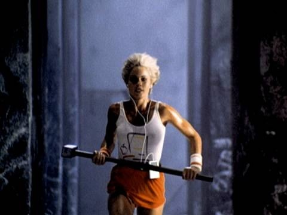
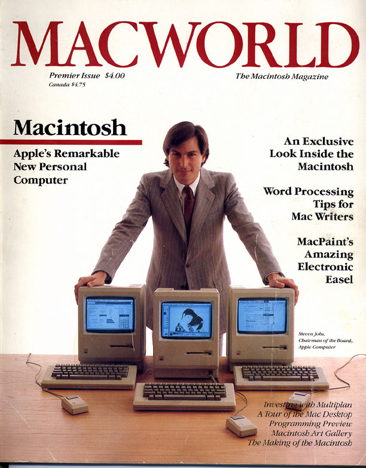

Chương 14

ao điểm hội nghị bán hàng của hãng Apple tháng 10 năm 1983 là một hài kịch ngắn dựa trên chương trình truyền hình “The Dating Games”, tạm dịch là “trò chơi hẹn hò”. Jobs đóng vai trò chủ trì, và ba đối thủ của ông, người đã được chính Jobs thuyết phục bay đến Hawaii, là Bill Gates và hai kỹ sư phần mềm Mitch Kapor và Fred Gibbons. Lúc bản nhạc nền của chương trình vang lên cũng là lúc ba người họ ngồi vào ghế của mình. Gates, trông như một cậu sinh viên năm thứ hai, được người bán hàng của Apple 750 nhiệt liệt tán thưởng khi nói: “Năm 1984, Microsofts kỳ vọng sẽ có được một nửa doanh thu từ phần mềm cho máy tính Macintosh”. Jobs, với vẻ ngoài bảnh bao và hoạt bát, tươi cười hỏi Gates liệu anh ta có nghĩ rằng hệ điều hành mới của Macintosh sẽ trở thành một trong những chuẩn mực mới của ngành công nghiệp phần mềm. Gates trả lời: “Để tạo nên một chuẩn mực mới không chỉ cần tạo ra một chút khác biệt. Đó phải là một thứ hoàn toàn mới và phù hợp với trí tưởng tượng của tất cả mọi người. Và Macintosh là cỗ máy duy nhất tôi từng thấy có thể đáp ứng tiêu chuẩn đó.”
Nhưng bất chấp những gì Gates nói, Microsoft vẫn ngày càng giống một đối thủ hơn là một cộng sự của Apple. Hãng vẫn tiếp tục sản xuất phần mềm ứng dụng ví dụ như Microsoft Word cho Apple, nhưng lại ngày càng thu được nhiều doanh thu từ hệ điều hành viết cho máy tính cá nhân IBM. Năm 1982, có 279.000 máy tính Apple lls được tung ra thị trường, so với 240.000 máy tính cá nhân IBM và các máy tính cùng dòng. Nhưng số liệu của năm 1983 đã trở nên hoàn toàn khác: 420.000 máy tính Apple lls so với 1,3 triệu máy tính IBM và các máy tính cùng dòng. Cả Apple III và Apple Lisa đều thất bại từ trong trứng nước.
Ngay khi Apple tiến sang thị trường Hawaii, tuần báo Business Week đã lên tiếng chỉ trích điều này. Tờ báo này giật tít: “Máy tính cá nhân: Và người chiến thắng là... IBM”. Câu chuyện bên trong mô tả chi tiết sự nổi lên của IBM: “Cuộc chiến giành ngôi vị chủ chốt đã ngã ngũ”, và tạp chí đó xác nhận rằng “Trong cuộc chiến chớp nhoáng đầy ấn tượng chỉ kéo dài vẻn vẹn 2 năm, IBM đã giành được hơn 26% thị phần, và được kỳ vọng sẽ giành được 50% thị phần máy tính thế giới vào năm 1985. Và 25% thị phần sẽ về tay các dòng máy tương thích với IBM.” Điều đó gia tăng áp lực cho dòng máy tính Macintosh sắp ra mắt vào tháng 1 năm 1984, ba tháng sau đó, cỗ máy này phải chống chọi được với IBM. Trong cuộc họp bán hàng, Jobs quyết định chơi bài ngửa. Ông tổng hợp lại tất cả những sai lầm IBM đã mắc phải kể từ năm 1958, sau đó, với một chất giọng u ám, ông miêu tả cách IBM đang làm để chiếm lĩnh thị trường máy tính cá nhân: “Liệu Người khổng lò xanh có hoàn toàn thống trị được nền công nghiệp máy tính và toàn bộ kỷ nguyên thông tin? Liệu George Orwel có đúng về năm 1984?”. Trong khoảnh khắc đó, một màn hình được thả từ trên trần xuống, trên đó có nội dung của đoạn quảng cáo truyền hình dài 60 giây cho Macintosh. Trong vài tháng tới, nó sẽ tạo thành một hiện tượng trong ngành quảng cáo, đồng thời cũng sẽ giúp hồi phục doanh số bán hàng vốn đang giảm sút của Apple. Jobs luôn có khả năng khơi dậy sức mạnh bằng cách tự tưởng tượng mình là một kẻ nổi loạn chiến đấu lại những thời kỳ đen tối. Và bây giờ ông đang truyền cảm hứng cho đội ngũ nhân viên của mình cũng với tầm nhìn đó.
Còn một chướng ngại vật nữa phải vượt qua: Hertzfeld và những lập trình viên khác phải hoàn thành bộ mã cho Macintosh để xuất hàng vào thứ Hai ngày 16 tháng Một. Một tuần trước đó, các kỹ sư đã kết luận rằng họ không thể làm kịp hạn chót.
Lúc đó, Jobs đang ở Grand Hyatt, Manhattan để chuẩn bị cho các thông cáo báo chí, nên một cuộc họp vào sáng Chủ nhật đã được triệu tập. Giám đốc phần mềm điềm tĩnh giải trình tình hình cho Jobs, trong khi Hertzfeld và những người khác thầm thì hội ý qua loa. Tất cả những gì họ cần là có thêm hai tuần nữa. Chuyến hàng đầu tiên được chuyển đến những đại lý có thể có bản dùng thử của phần mềm, và nó sẽ được thay thế ngay khi bộ mã mới được hoàn thành vào cuối tháng. Cả căn phòng im lặng. Jobs không tỏ ra tức giận, thay vào đó, ông nói bằng giọng lạnh lùng và u ám. ông động viên họ rằng họ thực sự rất giỏi, giỏi đến mức ông tin rằng họ sẽ làm được.
“Chúng ta không thể nào thất bại”, ông tuyên bố. Dường như có một sự thay đổi lớn trong không khí làm việc của trụ sở Bandley. “Các bạn đã làm việc vì bộ mã này hàng tháng trời, hai tuần nữa sẽ không đem lại nhiều khác biệt. Các bạn nên cố gắng vượt qua. Tôi sẽ gửi hàng vào thứ Hai tuần sau, với tên các bạn trên đó”.
“Vâng, chúng ta phải hoàn thành nó ngay bây giờ”, Steve Capps nói. Và họ đã làm được.
Một lần nữa, khả năng thay đổi thực tế của Jobs đã khiến họ làm được điều mà họ nghĩ là bất khả thi. Vào thứ Sáu, Randy Wigginton mua một túi lớn sô-cô-la phủ hạt cà phê cho ba kỹ sư làm việc thâu đêm cuối cùng. Khi Jobs đến làm việc vào lúc 8 rưỡi sáng thứ Hai, ông thấy Hertzfeld nằm dài mệt mỏi trên ghế sô pha. Sau khi bàn bạc vài phút về một lỗi nhỏ còn sót lại, Jobs cho rằng nó sẽ không gây trở ngại gì. Hertzfeld lết ra chiếc ô tô Volswagen màu xanh của mình, lái xe về nhà ngủ.
Chỉ một lúc sau, nhà máy của Apple ở Fremont tiến hành xuất xưởng những kiện hàng được trang trí bằng hàng chữ sặc sỡ Macintosh. Một chuyến hàng nghệ thuật thực sự, Jobs từng tuyên bố, và giờ đội ngũ nhân viên sáng tạo nên Macintosh đã đạt được nó.
Chương trình quảng cáo “1984”
Mùa xuân năm 1984, khi Jobs chuẩn bị cho sự ra mắt dòng máy tính Macintosh, ông tìm kiếm một hãng quảng cáo mà sự sáng tạo và ấn tượng được thể hiện rõ nét trong những sản phẩm họ tạo ra. “Tôi muốn một quảng cáo có thể khiến mọi người dừng bước. Tôi muốn nó phải như một tiếng sấm”. Công việc này được giao cho hãng quảng cáo Chiat/Day. Hãng này đã giành được đơn hàng của Apple sau khi mua lại bộ phận quảng cáo của Regis McKenna. Người đảm nhiệm là Lee Clow, một anh chàng cao lêu nghêu với bộ râu quai nón rậm rạp, mái tóc rối bù, điệu cười toe toét và đôi mắt sáng lấp lánh, giám đốc sáng tạo của văn phòng quảng cáo bộ phận bờ biển Venice ở Los Angeles. Clow là người hiểu biết và có tính cách thú vị, mang một phong thái thoải mái nhưng rất tập trung. Sau này, mối quan hệ giữa Jobs và anh ta kéo dài đến ba thập kỷ.
Clow và hai cộng sự, người phụ trách viết quảng cáo Steve Hayden và giám đốc hội họa Brenbt Thomas, từng nói đùa về một câu nói nhại theo tiểu thuyết của George Orwell: “Sao 1984 không giống như 1984”. Jobs rất thích câu nói ấy và yêu cầu họ sử dụng nó cho sự kiện ra mắt của Macintosh. Vì thế, họ dựng nên bản thảo cho đoạn quảng cáo dài 60 giây giống như những thước phim khoa học viễn tưởng. Nó khắc họa một người thiếu phụ nổi loạn vượt qua viên cảnh sát trong tiểu thuyết Orwell và ném chiếc búa tạ vào màn hình có chiếu bài diễn thuyết hùng hồn của Big Brother.
Ý tưởng toát lên từ đoạn quảng cáo đó đã nắm được tư tưởng của cuộc cách mạng máy tính cá nhân. Rất nhiều thanh niên, đặc biệt là những người có tư tưởng đả kích, từng nhìn nhận máy tính là công cụ mà chính phủ và các tập đoàn khổng lò dùng để phá hoại cá tính của con người.
Nhưng vào cuối những năm 1970, máy tính còn được xem như một công cụ tiềm năng nhằm gia tăng sức mạnh cá nhân. Đoạn quảng cáo xây dựng hình ảnh Macintosh như một chiến binh theo ý niệm thứ hai - một người đồng hành tuyệt vời, nổi loạn và anh hùng, người duy nhất đứng ra ngăn cản âm mưu thống trị thế giới và điều khiển suy nghĩ của những tập đoàn có ý đồ đen tối.

Một mảnh vỡ của vũ trụ Đoạn quảng cáo “1984”
Jobs thích ý tưởng đó. Thực tế là ý tưởng này có sự tương đồng với bản thân Jobs, vốn tự coi mình là một kẻ nổi loạn, ông vốn thích đồng hành cùng các hacker và những kẻ vi phạm tác quyền mà ông tuyển dụng để sáng tạo nên Macintosh. Tuy rằng Jobs đã rời bỏ nhóm Apple ở Oregon để xây dựng tập đoàn Apple, nhưng ông vẫn muốn được coi là một kẻ nổi loạn hơn là một người hợp tác.
Nhưng trong thâm tâm Jobs vẫn nhận ra càng ngày ông càng xa rời tinh thần của một hacker. Một vài người có thể buộc tội ông về việc bán sản phẩm của mình với giá đắt. Khi Wozniak thể hiện đúng tinh thần của câu lạc bộ máy tính Homebrew bằng cách chia sẻ miễn phí thiết kế của ông về Apple I, thì thay vào đó Jobs cứ khăng khăng đòi bán bản mạch. Bất chấp sự chần chừ của Worzniak, Jobs muốn biến Apple thành một tập đoàn lớn và không trao tặng cổ phiếu miễn phí cho những người bạn từng làm việc trong cùng ga ra với mình. Giờ đây, ông đang chuẩn bị tung ra Macintosh, một cỗ máy vi phạm rất nhiều chuẩn mực của hacker: Nó được định giá quá cao và không có khe cắm, đồng nghĩa với việc không thể cài thêm thẻ nhớ mở rộng hay cài cắm thêm gì vào bản mạch in chính để tạo thêm các tính năng mới. Nó còn yêu cầu những thiết bị đặc biệt chỉ để mở chiếc vỏ ngoài bằng nhựa. Nó là một hệ thống khép kín và có kiểm soát, giống như những sản phẩm được thiết kế bởi Big Brother chứ không phải bởi một tin tặc.
Vì thế, quảng cáo 1984 là cách Jobs tự khẳng định với chính mình và với thế giới về một hình ảnh mà ông mong muốn. Người nữ anh hùng với trang phục trắng có in hình vẽ Macintosh là một người nổi loạn để phá vỡ những chuẩn mực được đặt ra. Bằng việc thuê Ridley Scott, vị giám đốc từng đem lại thành công cho Blade Runner, Jobs đưa chính mình và Apple trở thành những kẻ nổi loạn của thời đại. Với đoạn quảng cáo đó, Apple trở nên khác biệt với những kẻ nổi loạn và hacker thông thường, và Jobs có quyền được nhìn nhận khác với họ.
Scully nghi ngờ khi mới xem bản phác thảo, nhưng Jobs khẳng định rằng họ chỉ cần một sự đột phá nữa thôi, ông có thể huy động một ngân quỹ 750.000 đô-la chỉ để dựng quảng cáo và họ dự định trình chiếu ra mắt đúng vào thời điểm giải Super Bowl. Ridley Scott dựng đoạn phim ở London, sử dụng rất nhiều người đầu trọc thật, vô hồn trong cảnh nô lệ giữa mê cung, đờ đẫn nghe theo tiếng nói của Big Brother phát ra từ màn hình lớn. Một nữ vận động viên ném đĩa được chọn để vào vai nữ anh hùng. Với nền xám chủ đạo mang một vẻ công nghiệp và lạnh lùng, Scott đã làm dậy lên bản chất nổi loạn của Blade Runner. Ngay khi Big Brother tuyên bố: “Chúng ta sẽ chiếm ưu thế!”, chiếc búa của nữ anh hùng đập tan màn hình và hình ảnh Big Brother tan biến trong khói và ánh sáng.
Khi Jobs chiếu quảng cáo cho nhóm nhân viên kinh doanh của Apple tại cuộc họp ở Hawaii, họ đã hoàn toàn bị gây ấn tượng. Vì vậy, ông trình chiếu nó trước hội đồng quản trị vào cuộc họp tháng 12 năm 1983. Khi đèn được bật trở lại trong phòng họp, tất cả đều lặng phắc. Giám đốc điều hành của Macy ở California Phillip Schelin gục đầu xuống bàn. Mike Markkula nhìn chăm chú, hoàn toàn yên lặng, thoạt trông có thể cho rằng ông đang bị ấn tượng bởi sức mạnh của đoạn quảng cáo. Sau đó ông nói: “Có ai muốn tìm một hãng quảng cáo khác không?” Schulley đáp: “Hầu hết mọi người nghĩ rằng đây là quảng cáo tệ nhất mà họ từng xem”. Sculley trở nên ngần ngại, ông ta đề nghị ChiaưDay bán rẻ hai thời lượng quảng cáo, một đoạn dài 60 giây, đoạn kia dài 30 giây mà họ đã mua trước đó.
Jobs vẫn kiên định với ý kiến của mình. Một buổi tối khi Wozniak, người từng rời bỏ rồi lại quay lại Apple hai năm trước đó, đang rảo bước vào toàn nhà Macintosh, Jobs chộp ngay lấy ông và nói: “Làm ơn lại đây xem cái này”. Jobs lấy ra một cuốn băng video và chiếu đoạn quảng cáo.
“Tôi thực sự bị ấn tượng”, Woz hồi tưởng lại, “Tôi nghĩ đó là thứ tuyệt diệu nhất”. Khi Jobs nói hội đồng quản trị từ chối chiếu nó ở Super Bowl, Wozniak hỏi về giá của một xuất chiếu. Jobs nói với ông ta là 800.000 đô-la. Với lòng hào hiệp hơi chút bốc đồng, ngay lập tức Wozniak đề nghị: “Tôi sẽ trả một nửa nếu anh trả một nửa”.
Nhưng cuối cùng thì ông không cần làm như vậy. Hãng quảng cáo đồng ý bán rẻ đoạn quảng cáo dài 30 giây, nhưng không bán đoạn dài hơn dưới hình thức chống đối mềm mỏng. Lee Clow thú nhận “Chúng tôi nói với họ rằng chúng tôi không thể bán đoạn băng dài 60 giây, trong khi thực tế là chúng tôi đã không cố gắng để làm điều đó”. Có lẽ để tránh những bất đồng ý kiến với cả hội đồng quản trị và với Jobs, Sculley đã quyết định để giám đốc marketing Bill Campbell xem xét nên làm gì. Campbell, vốn là huấn luyện viên bóng bầu dục, đã quyết định phải triển khai đại sự. ông nói với cả nhóm: “Tôi nghĩ chúng ta nên tiếp tục triển khai kế hoạch Đầu hiệp ba của giải Super Bowl XVIII, bên chiếm thế thượng phong là Raiders đã ghi một bàn thắng trước Redskin và thay vào trình chiếu đoạn băng quay lại ngay lúc đó, màn hình vô tuyến trên khắp đất nước trở nên đen ngòm trong khoảng hai giây. Sau đó, một đoàn người đầu trọc vô hòn diễu hành trong một gam màu đen trắng u ám tràn ngập màn hình trên nền âm thanh và thuyết minh mang âm hưởng ma quái. Hơn 96 triệu người xem đoạn quảng cáo đặc biệt đó. Cuối đoạn quảng cáo, khi đám đông vô hòn đang hoảng loạn nhìn hình ảnh Big Brother tan biến trên màn hình lớn dưới cú ném của chiếc búa tạ, một giọng nói trầm ấm, bình thản vang lên: “Vào ngày 24 tháng 1, công ty máy tính Apple sẽ giới thiệu máy tính Macintosh. Và bạn sẽ thấy tại sao 1984 lại không giống 1984”.
Đó quả là một tin giật gân. Tối hôm đó cả ba nhà mạng và năm mươi trạm phát sóng địa phương truyền đi bản tin mới về đoạn quảng cáo, tạo nên một hiện tượng lan truyền như virus trong kỷ nguyên chưa có YouTube. Sau đó, nó đã được TV Guide và Advertising Age bình chọn là đoạn quảng cáo hay nhất mọi thời đại.
Luồng gió mới cho ngành quảng cáo
Sau vài năm, Steve Jobs trở thành một bậc thầy về giới thiệu sản phẩm. Trong trường hợp của Macintosh, đoạn quảng cáo đầy ấn tượng của Ridley Scott chỉ là một yếu tố, phần còn lại là chọn phương tiện truyền thông thích hợp. Jobs tìm mọi cách để làm bừng lên sự cuồng nhiệt trong công chúng, tựa như một phản ứng dây chuyền. Đó là một hiện tượng mà ông có thể tái thực hiện mỗi khi giới thiệu một sản phẩm quan trọng, từ Macintosh năm 1984 cho tới Ipad năm 2010. Như một thầy phù thủy, ông có thể lặp đi lặp lại màn ảo thuật, kể cả khi các phóng viên đã chứng kiến nó nhiều lần và biết rõ nó được thực hiện như thế nào. ông đã học được nhiều điều từ Regis McKenna, người sành sỏi trong việc chiếm được thiện cảm của đám nhà báo tự phụ. Nhưng Jobs có trực cảm riêng về cách gợi lên sự thích thú, tranh thủ bản tính ưa cạnh tranh của đám phóng viên và kiếm lợi từ việc cung cấp những thông tin độc quyền cho cánh nhà báo chịu trả hậu hĩnh.
Tháng 12 năm 1983, Jobs đưa hai kỹ sư hàng đầu hay còn được gọi là “Phù Thủy Công Nghệ” của mình là Andy Hertzfeld và Burell Smith đến New York và đến thăm tờ Newsweek để kể về câu chuyện của “những cậu bé tạo ra Mac”. Sau khi đưa ra bản demo của Macintosh, họ lên tầng trên nói chuyện với Katherine Graham, vị tổng biên tập huyền thoại, người có một niềm yêu thích vô tận đối với những sáng tạo mới. Sau đó tạp chí đã đưa một người phụ trách chuyên mục và nhiếp ảnh viên tới Palo Alto với Hertzfeld và Smith. Kết quả là tập tài liệu đầy thông minh dài bốn trang nhằm ca ngợi hai người đã ra đời. Những bức ảnh khiến họ trông như những thiên sứ của thời đại mới. Bài báo trích dẫn lời phát biểu của Smith về dự định của anh trong tương lai: “Tôi muốn tạo nên chiếc máy tính của thập niên 1990. Tôi muốn thực hiện điều đó ngay ngày mai”. Bài báo còn cho thấy sự kết hợp giữa bản tính bốc đồng và sức hút của ông chủ Apple: “Đôi khi Jobs bảo vệ ý kiến của mình bằng những lời nói mà không phải lúc nào cũng chỉ mang tính hăm dọa. Có lời đồn rằng ông ta đã dọa sa thải những nhân viên cứ khăng khăng cho rằng máy tính của ông cần có thêm phím con trỏ, điều mà Jobs xem là đã lỗi thời. Nhưng khi Jobs ở vào trạng thái tốt, ông luôn là hình mẫu của sự hấp dẫn và bòng bột, giao thoa giữa trí tuệ sắc sảo và biểu hiện yêu thích của ông “Vĩ đại điện rồ”
Steven Levy, một phóng viên chuyên viết về công nghệ, lúc đó đang làm việc cho tờ The Rolling stone, đến phỏng vấn Jobs, và bị ông thúc đẩy về yêu cầu tổng biên tập tạp chí đưa đội ngũ nhân viên của Macintosh lên bìa tạp chí. “Xác suất mà Jann Wenner đồng ý thay bức ảnh của sting bằng ảnh của một đám những tên ngốc ham mê máy tính cũng chỉ nhiều như xác suất của một kết quả trong tổng số vô vàn đáp Ấn mà Google đưa ra”. Levy nghĩ, quả đúng như vậy. Jobs lên tiếng đả kích The Rolling stone rằng đây là một tờ báo chuyên đăng tin lá cải, luôn khát khao có những chủ đề và độc giả mới. Vì thế, Mac có thể là vị cứu tinh cho tạp chí. Levy đáp trả rằng tạp chí The Rolling stone thực sự tốt, ròi hỏi liệu rằng gần đây Jobs có đọc nó không. Jobs nói rằng có, bài báo viết về MTV, và đó thực sự là một thứ rác rưởi. Levy cho biết ông chính là tác giả của bài báo đó.
Tin vào suy nghĩ của mình, Jobs không rút lại lời đánh giá đó. Thay vào đó ông bàn luận về Macintosh một cách điềm tĩnh. Ông nói: “Chúng ta sẽ được hưởng lợi từ những tiến bộ khoa học mà những người đi trước chúng ta đã tạo ra. Thật tuyệt khi tạo nên một thứ gì đó có thể biểu trưng cho kho tàng tri thức và kinh nghiệm của nhân loại”.
Bài viết của Lev không lên trang nhất. Nhưng sau đó tất cả các sản phẩm chính có Jobs nhúng tay vào tại NeXT, Pixar, và những năm sau đó khi ông quay lại Apple đều lên trang nhất của tất cả các tờ Time, Newsweek hoặc Business Week.
Ngày 24 tháng Một năm 1984
Vào buổi sáng mà Andy Hertzfeld cùng các cộng sự hoàn thành nốt phần mềm cho máy tính Macintosh, anh cảm thấy khá kiệt sức và mong được ngủ nguyên ngày.
Nhưng chiều hôm đó, sau 6 tiếng đồng hồ được ngủ, anh lái xe đến trụ sở. Anh muốn đến kiểm tra xem liệu có sơ suất nào không, và hầu hết các đồng nghiệp của anh cũng làm như vậy. Họ đi lại quanh phòng, tuy mệt mỏi nhưng đầy phấn khích. Rồi Jobs bước vào: “Các bạn, hãy rời khỏi hành lang, công việc vẫn chưa kết thúc. Chúng ta cần một bản demo cho buổi giới thiệu”, ông chuẩn bị một lễ ra mắt hoành tráng cho Macintosh trước đông đảo khán giả và giới thiệu các chức năng tuyệt vời của nó trên khung cảnh đầy cảm hứng của bộ phim Chariots of Fire (tạm dịch: Những cỗ xe trong lửa), ông nói thêm: “Nó phải được hoàn thành vào cuối tuần để sẵn sàng cho buổi tổng duyệt.” Ai nấy đều rên lên, “Nhưng khi nói chuyện chúng tôi đều nhận ra rằng thật thú vị khi tạo ra một cái gì đó thực sự ấn tượng”, Hertzfeld hòi tưởng lại.
Lễ ra mắt sẽ diễn ra tám ngày sau đó, vào cuộc họp cổ đông thường niên của Apple ngày 24 tháng Một, tại thính phòng Flint của trường Cao đẳng Cộng đồng De Anza.
Đoạn quảng cáo trên truyền hình và những thông cáo báo chí giật gân sẽ là hai yếu tố đầu tiên được Jobs sử dụng để giới thiệu một sản phẩm được cho rằng sẽ đi vào lịch sử như một dấu son chói lọi.
Yếu tố thứ ba là sự xuất hiện của sản phẩm trước công chúng, giữa khung cảnh đầy phô trương, trước đông đảo khán giả là những tay phóng viên sẽ trở nên vô cùng hứng khởi.
Hertzfeld đã thành công khi tạo nên một phần mềm chơi nhạc trong vòng hai ngày để chiếc máy tính có thể chiếu bộ phim Chariots of Fire. Nhưng khi Jobs nghe nó, ông đánh giá đoạn băng cực kỳ tệ hại và quyết định dùng máy ghi âm. Cùng lúc đó, Jobs bị thu hút bởi một chương trình có thể chuyển văn bản thành giọng nói với âm sắc điện tử quyến rũ, và quyết định sử dụng nó cho bản demo. Ông khăng khăng nói: “Tôi muốn Macintosh là chiếc máy tính đầu tiên có thể giới thiệu về chính nó”.
Vào đêm tổng duyệt trước lễ ra mắt, mọi việc đều không lấy gì làm tốt đẹp. Jobs không thích cách các hình ảnh động chạy trên màn hình Macintosh, và liên tục yêu cầu phải chỉnh lại. ông cũng không hài lòng với hệ thống ánh sáng sân khấu, và yêu cầu Sculley chuyển tới ngồi các vị trí khác nhau để đưa ra nhận xét. Sculley vốn chưa bao giờ phải suy nghĩ nhiều về sự khác nhau của ánh đèn sân khấu và đưa ra nhiều câu trả lời khác nhau như khi một bệnh nhân trả lời bác sĩ nhãn khoa rằng mắt kính nào làm chữ hiện lên rõ nét hơn.
Nhưng trên hết, Jobs lấy làm bực dọc về bài phát biểu của mình. Sculley vốn tự ca ngợi mình là một nhà văn nên ông ta gợi ý vài thay đổi trong bài viết của Jobs. Jobs hòi tưởng lại rằng ông hơi thấy khó chịu, nhưng mối quan hệ của họ vẫn đang trong giai đoạn ông cần phải phỉnh phờ và tôn trọng cái tôi của Sculley. ông nói với Sculley: “Tôi coi anh như Woz và Markkula. Anh như là một trong những người sáng lập công ty. Họ đã lập ra công ty, nhưng tôi và anh đang tạo lập tương lai cho nó”. Và Sculley tin vào điều đó.
Sáng hôm sau, cả thính phòng 2.600 chỗ đã chật kín. Jobs đi lên bục diễn thuyết với chiếc áo len màu xanh nước biển, áo sơ-mi trắng và chiếc cà-vạt xanh lá cây nhạt, ông nói với Sculley khi họ ở sau cánh gà đợi chương trình bắt đầu: “Đây là khoảnh khắc quan trọng nhất trong suốt cuộc đời tôi. Tôi thực sự lo lắng. Anh có lẽ là người hiểu rõ tôi nghĩ về chuyện này như thế nào”.
Sculley nắm lấy tay ông và thầm thì: “Chúc may mắn”.
Với tư cách chủ tịch công ty, Jobs bước lên bục diễn thuyết để bắt đầu cuộc họp cổ đông.
Ông làm việc đó với phong cách riêng, nó giống như một lời hiệu triệu: “Tôi xin phép được bắt đầu cuộc họp với một bài hát mà Bob Dylan đã viết 20 năm trước”, ông khẽ mỉm cười, ròi nhìn xuống hát đoạn thứ hai của bài hát: “The Times They Are a- Changin‟” (tạm dịch: Khoảnh khắc mọi thứ thay đổi”. Với âm sắc cao, ông hát cả mười dòng nhạc, kết thúc bằng câu: “For the loser now/Will be later to win/For the times they are a-changin‟.” (tạm dịch: Hỡi những kẻ đang thất bại, sau này họ sẽ chiến thắng, khi mọi thứ đều thay đổi”. Bài hát đó làm cho những thành viên tỷ phú của hội đồng quản trị liên tưởng đến bản tính ưa nổi loạn của ông. Ông có một bản ghi lại buổi hòa nhạc của Dylan và Joan Baez vào lễ Halloween năm 1964 tại hội những người yêu nhạc tại trung tâm Lincoln.
Sculley bước lên bục để báo cáo doanh thu của công ty, và khán phòng bắt đầu ồn ào khi ông phát biểu với giọng đều đều. Cuối cùng, ông kết thúc với một nhận xét: “Điều quan trọng nhất tôi có được trong chín tháng gần đây khi làm việc ở Apple là tình bạn với Steve Jobs. Đối với tôi, mối quan hệ mà chúng tôi nuôi dưỡng có ý nghĩ rất sâu sắc”.
Ánh đèn mờ đi khi Jobs tái xuất hiện trên sân khấu, hô vang một khẩu hiệu mang ý nghĩa như một hòi còi xung trận, giống như ông từng nói trong cuộc họp kinh doanh ở Hawaii. “Năm 1958, IBM bỏ qua cơ hội mua lại một công ty non trẻ đã phát minh ra một công nghệ mới tên là sao chụp khô. Hai năm sau, hãng Xerox ra đời, và IBM phải hối hận về điều đó”. Đám đông cười ồ.
Hertzfeld, tuy đã nghe bài diễn thuyết ở cả Hawaii và những nơi khác, vẫn bị ấn tượng mạnh ở cách mà bài diễn thuyết lần này được phát biểu với một nguồn cảm hứng mạnh mẽ hơn bao giờ hết.
Sau khi kể ra những sai lầm khác của IBM, Jobs trở lại với tốc độ và trạng thái cảm xúc hiện tại:
“Bây giờ là năm 1984. IBM dường như muốn thâu tóm tất cả. Apple được coi là đối thủ duy nhất mà IBM phải lo ngại. Khách hàng, sau khi nồng nhiệt chào đón IBM, giờ đây đã e ngại về tương lai mà IBM sẽ thống trị và điều hành tất cả, và đang quay lại với Apple như cách thức duy nhất họ có làm để đảm bảo sự tự do trong tương lai. IBM muốn có tất cả, và đang chĩa súng vào Apple, trở ngại duy nhất của họ trên con đường tiến tới thống trị cả toàn bộ ngành công nghiệp này.
Liệu người khổng lồ xanh có thâu tóm được toàn bộ ngành công nghiệp máy tính? Toàn bộ kỉ nguyên thông tin? Liệu George Orwell có đúng?”
Đến cao trào bài diễn thuyết, khán giả từ chỗ có vài tiếng vỗ tay lác đác đã hoan hô nhiệt liệt. Nhưng trước khi họ có thể trả lời câu hỏi của Orwell, thính phòng chìm vào bóng tối và đoạn phim quảng cáo 1984 xuất hiện trên màn hình. Khi nó kết thúc, toàn bộ khán giả đứng cả dậy để hoan hô.
Với một sự nhanh nhẹn đáng ngạc nhiên, Jobs xuất hiện từ trong bóng tối, tiến tới một chiếc bàn nhỏ bên trên có chiếc túi vải. ông nói: “Bây giờ tôi sẽ cho quý vị thấy Macintosh”, ông lấy ra chiếc máy tính, con chuột, lắp chúng lại một cách khéo léo và rút ra một chiếc đĩa mềm kích thước 3 inch rưỡi từ túi áo sơ mi. Bộ phim Chariots of Fire được trình chiếu. Jobs nín thở khi thấy bản demo không chạy tốt vào đêm hôm trước. Nhưng lần này nó chạy một cách trôi chảy. Dòng chữ MACINTOSH chạy ngang màn hình, dưới đó là dòng chứ “Tuyệt hảo” từ từ hiện lên trông như đang được viết bằng tay. Vốn chưa bao giờ nhìn thấy bản đồ họa đẹp đến thế, khán giả trở nên lặng thinh đến nỗi nghe được từng hơi thở. Sau đó, với một tốc độ đáng kinh ngạc, những bức ảnh liên tiếp xuất hiện: phần mềm đồ họa QuickDraw của Bill Atkinson, theo sau là hình ảnh của những phông chữ khác nhau, những tài liệu, đò thị, tranh vẽ, một ứng dụng chơi cờ vua, bảng tính và hình ảnh Steve Jobs với bong bóng ý nghĩ có chứa một chiếc máy tính Macintosh.
Khi đoạn băng kết thúc, Jobs mỉm cười và nói: “Gần đây chúng tôi đã nói rất nhiều về Macintosh. Nhưng hôm nay là lần đầu tiên chúng tôi để Macintosh tự giới thiệu về mình”. Ông tiến về phia chiếc máy tính, bấm chuột, và, bằng một giọng nói nhanh nhưng đầy quyến rũ, Macintosh trở thành chiếc máy tính đầu tiên có thể tự giới thiệu về mình: “Xin chào. Tôi là Macintosh. Thật tuyệt khi được ra khỏi chiếc túi đó”. Cả khán phòng như nổ tung bởi những tràng pháo tay. Thay vì dừng lại một lát, chiếc máy tính tiếp tục nói: “Tôi không quen nói trước đám đông, nhưng tôi muốn chia sẻ với các bạn một triết lý mà tôi nghĩ đến khi lần đầu nhìn thấy khung máy tính IBM, đó là đừng bao giờ tin vào một chiếc máy tính mà bạn không thể nhấc lên được”.

Một lần nữa tiếng hoan hô như sấm nổ ra ở những hàng ghế cuối cùng. “Tất nhiên, tôi có thể nói chuyện. Tuy nhiên, bây giờ tôi muốn ngồi xuống và lắng nghe. Vì thế, với niềm tự hào to lớn, tôi xin được giới thiệu người đàn ông mà tôi coi như cha đẻ, Steve Jobs”.
Sự huyên náo nổ ra, đám đông nhảy lên và đấm tay vào không trung một cách cuồng nhiệt.
Jobs chậm rãi gật đầu mỉm cười, sau đó nhìn xuống và cảm thấy như nghẹt thở. Tiếng hoan hô kéo dài tới năm phút.
Sau khi đội ngũ nhân viên của Macintosh trở về trụ sở Bandley 3 vào chiều hôm đó, một chiếc xe tải tiến vào bãi đỗ xe và Jobs tập hợp mọi người xung quanh nó. Trong đó là một trăm chiếc máy tính Macintosh mới toanh, trên mỗi chiếc đều có một tấm biển. Hertzfeld nhớ lại:
“Steve đã bắt tay các nhân viên, mỉm cười và tặng máy tính cho mỗi người, còn bọn tôi thì đứng xung quanh tán thưởng”. Làm việc dưới sự điều hành cứng rắn đến khó chịu của Jobs khiến chúng tôi bị mệt nhoài và bầm dập. Nhưng Jobs chứ không phải Rashkin, không phải Wozniak, Sculley hay bất cứ ai khác trong công ty tạo nên Macintosh. Vào ngày ông giới thiệu máy tính Macintosh trước công chúng, một phóng viên của tờ Popular Science đã hỏi Jobs về kiểu nghiên cứu thị trường mà ông thực hiện. Jobs mỉa mai đáp: “Liệu Alexander Graham Bell có làm bất cứ một nghiên cứu thị trường nào trước khi phát minh ra điện thoại không?”.